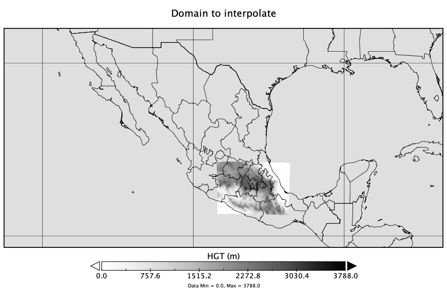
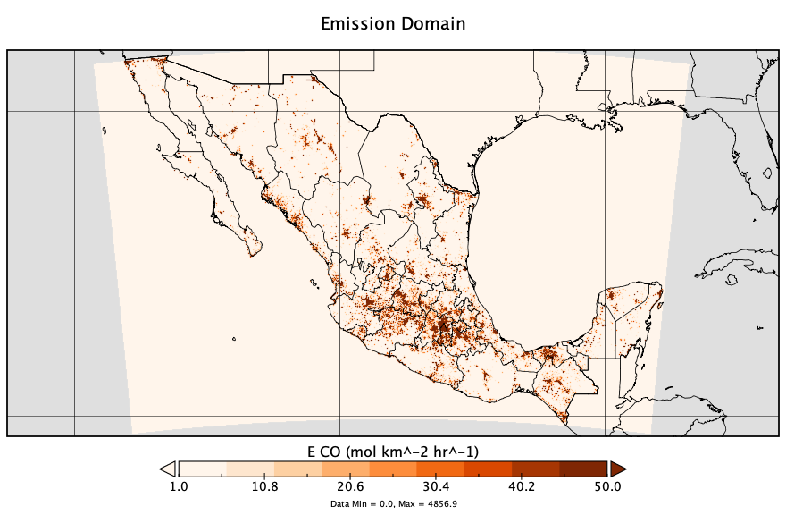
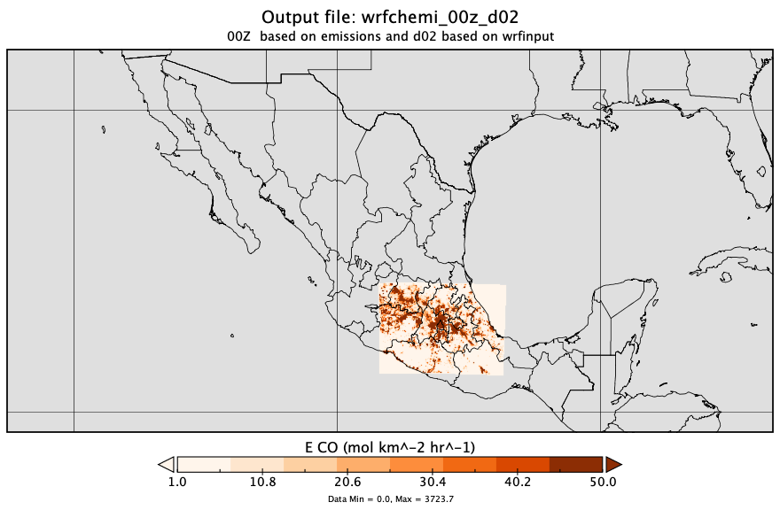
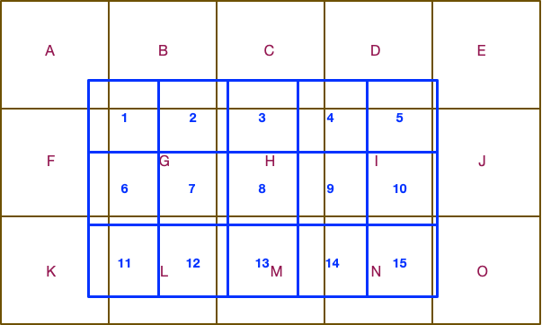
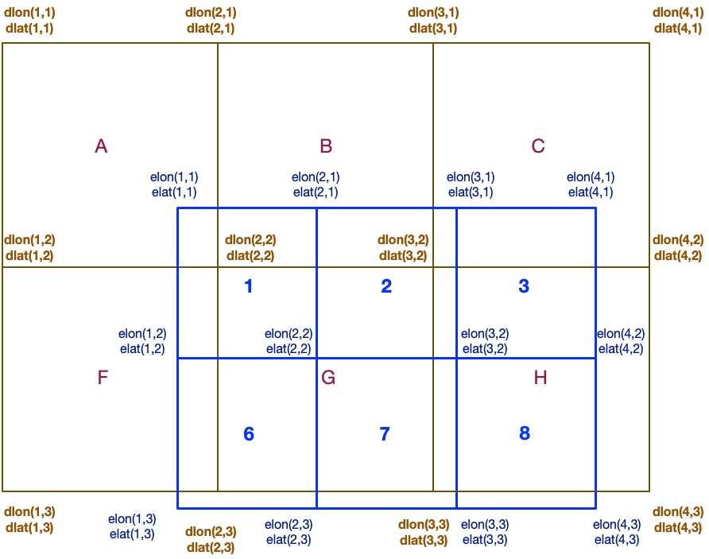
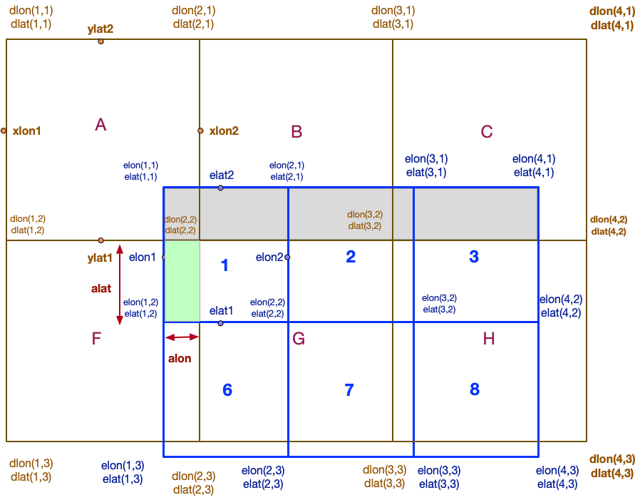

|
Interpola
v3.0
Emissions interpolation
|
|
Interpola
v3.0
Emissions interpolation
|
Emission Interpolation to a new mesh by using a conservative flux method
The new mesh is provided by the wrfinput file and the original grid with emissions are provided from wrfchem file
input files:
wrfchemin.nc ! A 12 hours emission file to be interpolated (0 to 11 hour or 12 to 23 hour)
wrfinput ! Domain where emissions will be interpolated can be a ge_em.d0?.nc file but the name should be wrfinput.
output file:
wrfchemi_00z_d01 or wrfchemi_12z_d01 ! 00z or 12z based on emissions file.
! d01, d02,... and date based on wrfinput
! for ge_em.d0?.nc the dates are provided from wrfchemin.nc
wrfchemin.nc - file contain emissions starting with "E_"



Emissions Inventories are generatred for represent global, regional or local emissions, air quality models domains are displayed in a different grid (dimensions and location) than the emissions. On other hand, emissions are a flux and it is necesary to use a mass conservative interpolation in order to avoid inconsistencies in the emissions. An example of overlaping grids is presented in the followgin figure.

Grid with letters represents the new domain (it has coordinates dlat,dlon) and grid with numbers is the emissions (it has coordinates elat,elon). For N values in emission axis there are N+1 coordinates.
For the new domain to interpolate the emissions the following variables are set (where i is in x axis and j in y axis):
| New domain | Emissions domain | Type |
|---|---|---|
ylat1=dlat(i ,j ) | elat1= elat(ii,jj) | unstagged |
ylat2=dlat(i,j+1) | elat2= elat(ii,jj+1) | stagged lat |
xlon1=dlon(i ,j) | elon1= elon(ii,jj) | unstagged |
xlon2=dlon(i+1,j) | elon2= elon(ii+1,jj) | stagged long |
The following figure presents the coordinates locations in each mesh.

In order to obtain the overlaped areas the following conditionals has to be evaluated:
if(ylat1 .le. elat2 .and. ylat2 .ge. elat1) then
alat=(min(ylat2,elat2)-max(ylat1,elat1))/(elat2-elat1)
end if
if(xlon1 .le. elon2 .and. xlon2 .ge. elon1) then
alon=(min(xlon2,elon2)-max(xlon1,elon1))/(elon2-elon1)
end if
The following procedure is followed in order to allocate the emissions in the new grid:
alat=(min(ylat2,elat2)-max(ylat1,elat1))
alon=(min(xlon2,elon2)-max(xlon1,elon1))
area=max(0.,alat*alon)

Emissions in cell:
 1.8.18
1.8.18